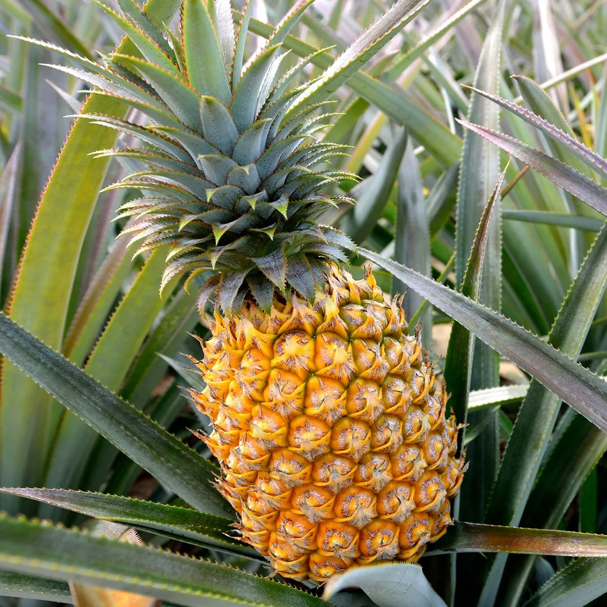
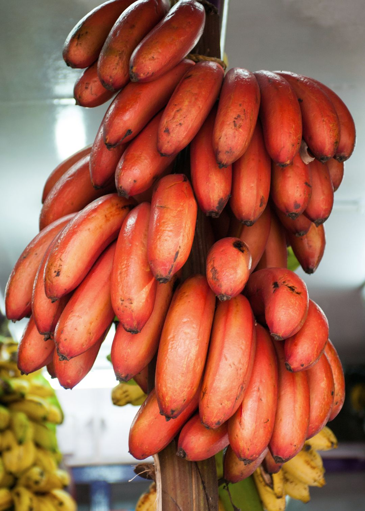

Abduzcan
Pendiente
Norte de Santander · Pamplona
Progreso
25%
San Cristóbal
Completado
Santander · Bucaramanga
Progreso
100%
Lotes

LOTE-001
Pendiente
Cultivo
Tomate
Nombre científico
Solanum lycopersicum
Variedad
Tomate Chonto
Área siembra
2.5 ha
Plantas sembradas
3.200
Estado fenológico
🌸 Floración
Fecha siembra
10/01/2026
Realizar inspección
LOTE-002
Completado
Cultivo
Mango
Nombre científico
Mangifera indica
Variedad
Mango Tommy Atkins
Área siembra
4.0 ha
Plantas sembradas
1.800
Estado fenológico
🍃 Vegetativo
Fecha siembra
05/09/2025
Ver inspección

LOTE-003
Pendiente
Cultivo
Piña
Nombre científico
Ananas comosus
Variedad
Piña Golden (MD-2)
Área siembra
3.4 ha
Plantas sembradas
2.582
Estado fenológico
🌸 Floración
Fecha siembra
18/04/2026
Realizar inspección

LOTE-004
Pendiente
Cultivo
Banana
Nombre científico
Musa acuminata
Variedad
Banana Roja
Área siembra
1.1 ha
Plantas sembradas
4.253
Estado fenológico
🌸 Floración
Fecha siembra
18/01/2026
Realizar inspección
Inspección — —
Cultivo: —
Plantas afectadas registradas
0
Plantas sembradas: --
Plagas identificadas en el cultivo
Selecciona todas las plagas que observas.
Puedes marcar una o varias tarjetas.
No hay plagas registradas para este cultivo en el catálogo.